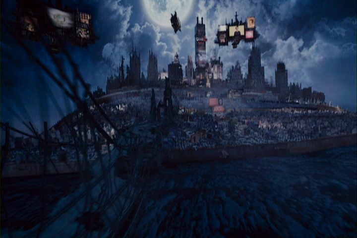
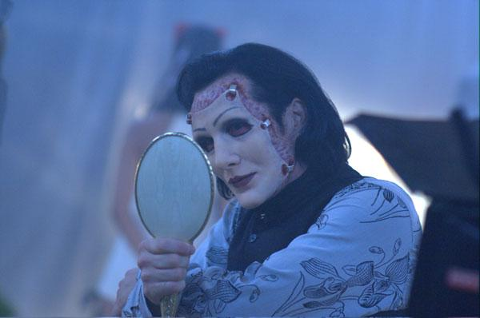
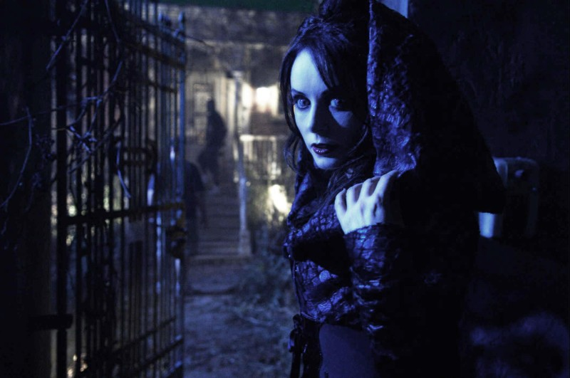

Movie review by : Mr. Roboto
Year : 2008
Directed by : Darren Lynn Bousman
Written by : Darren Smith & Terrance Zdunich
Degree of Cyberpunk visuals : Medium
Correlation to Cyberpunk themes : Low
Rating : 7/10
Key cast members :
Overview: I was hoping to see this movie before seeing Repo Men so I could at least see how close to each other they were. While there are some minor similarities (primarily a megacorp, their organ financing, and the use of repo men) the visuals, story-lines, and this being an opera make the two movies vastly different. While Repo Men's visuals draws more from Blade Runner, Repo! is definitely goth with frequent scenes involving corpses and/or graveyards.

The Story: Geneco becomes the top company when an epidemic of unexplained organ failures sweep the planet. They manage to make organ transplants affordable, but they also manage to get a law passed that allows the organs to be repossessed. Another product Genco makes is Zydrate, a highly addictive pain killer often used by surgery addicts. Geneco is the only legalized source of Zydrate, but a black market exists where grave robbers extract the drug from the brains of corpses.
The current head of Geneco, Rotti Largo (Sorvino), is terminally ill and plans to name his successor at "The Genetic Opera" when popular singer Blind Mag also plans to make her final performance. His three children, the violent Luigi (Mosley), the mask wearing Pavi (Skinny Puppy's Ogre, FTW), and surgery-and-Zydrate addicted Amber Sweet (Hilton) hope to inherit daddy's company, but he is disappointed with his kids and has another person in mind: Shilo Wallace.

Pavi (Ogre) gets his game face on. Well, he gets someone's face on.
Shilo (Vega) is the daughter of Nathan (Head), who is not only trying to find a cure for the blood disease that Shilo inherited from her mother, but is also Geneco's repo man. He keeps her locked in her room, fearing she might die from the disease while he goes out for repossessions. Shilo sneaks out anyway and in her nightly journeys she meets a grave robber (Zdunich) who introduces her to the Zydrate underground and reveals that Blind Mag, Shilo's favorite singer, is going to lose her eyes because she will no longer be working with Geneco.
A tangled web. With several different story lines going on at once, it may be hard to follow them with all the singing. They may seem unrelated to each other at first, but thanks to comic-styled flashbacks they show how they are connected to Nathan's dead wife and the upcoming Genetic Opera.
Speaking of the songs, it's been reported that there were some 65-75 songs made for the film. Not all of them have been used, but do appear on the various soundtracks (memo to self: find the soundtracks.). Most of them are short, only a minute or two, but often involve at least two cast members singing together with different lyrics. This may add to the confusion of following the stories, but not too much to follow if you pay attention.

Blade Runner or Count Dracula? The distant city scene above may make one think of Blade Runner's future Los Angeles, but the closer-in scenes is very much goth inspired. The Wallace house could very well be a haunted house (just needs some more cobwebs) while Shilo frequents a graveyard where her mother's tomb is (side note: Shilo also collects insects). People are often dressed like they're going to a funeral or an S&M club. There's an area called "Sanitarium Square", where a festival is happening before the Opera, that has brightly lit tents amid the darker streets. Not quite the cyberpunk visuals I was expecting, but does make the dark atmosphere... darker.
Conclusion: To be honest, Repo! wasn't quite what I expected. It felt more goth than actual cyberpunk, so much so that I'm tempted to tag this as "not cyberpunk." Then again, with goth style being closely related to cyberpunk lately it can almost be expected. In this case, it helped rather than hurt, as it made the operatic aspects more intense. Repo! is a bit of a bloody mind bender, but certainly worth watching... and listening to.